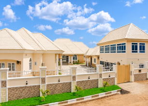
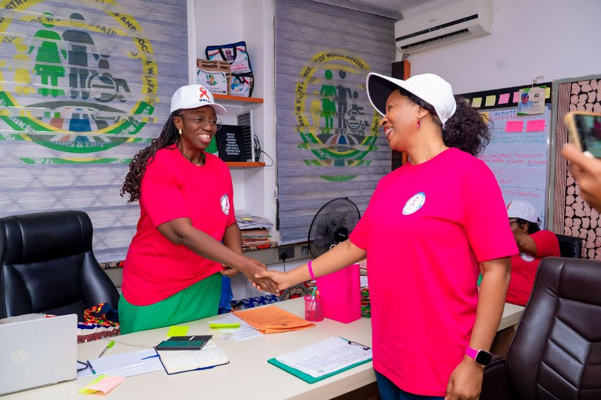

BBCSI 10th Anniversary Recap: A Week of Impact, Gratitude and Celebration
A Decade of Impact
Published: · BBCSI Communications Team

Thank you. BBCSI family, our partners, supporters and friends came together to mark ten years of breast cancer awareness, advocacy and support in Benue State.
Since 2016, BBCSI has grown from a small circle of survivors into a community that reaches women, men and families across the state. Our 10th anniversary, themed “Decade of Impact”, was an opportunity to look back with gratitude, honour the courage of survivors and patients, and renew our commitment to the next decade. This is a look back at the week.
The Week at a Glance
Day One: Delegates Arrive in Makurdi
The anniversary week opened with the arrival of delegates from Adikpo, Gboko, Konshisha and Otukpo, hosted at Zaginas Suite through the sponsorship of Madam Mary Ahua, Chairperson of the BBCSI Advisory Board.
Read the full story →
Day Two: Courtesy Visit to the Commissioner for Women Affairs
BBCSI visited the Honourable Commissioner for Women Affairs, Hon. Mrs. Theresa Odachi Ikwue, to seek collaboration on awareness, early detection and access to support services. The Commissioner expressed her readiness to work with the Initiative.
Read the full story →
Day Three: Taking Hope to the Hospital at the Federal Medical Centre, Wadata
On Oncology Day, BBCSI visited the Federal Medical Centre, Wadata, to encourage patients undergoing chemotherapy, commend the oncology nurses on duty and call for better cancer care facilities.
Read the full story →
Day Four: Catch Them Young at Hearts & Minds School
BBCSI took breast cancer awareness and handwashing education to pupils of Hearts & Minds School, Wadata, Makurdi, marking International Handwashing Day and giving the children breast awareness door hangers to share with their families.
Read the full story →
Day Five: Taking Hope to the Displaced at Daudu 1 IDP Camp
BBCSI took breast cancer awareness and humanitarian support to Daudu 1 IDP Camp, educating residents on breast self-awareness and presenting provisions to camp officials. A referral from the camp days later led BBCSI to fund a mammogram for a woman with a breast lump.
Read the full story →
Day Six: Kicking for Health, Unity and Friendship
In a novelty football match at Hearts & Minds School field, BBCSI faced the Benue Medical Women’s Association of Nigeria (MWAN) in front of distinguished guests, with the Federal Commissioner for Benue State as referee. MWAN won 2–1, but BBCSI scored in friendship.
Read the full story →
Day Six, Part Two: The 10th Anniversary Gala Night
An evening of gratitude, celebration and remembrance at Royal Choice Inn, Makurdi, which drew 335 guests against a target of 250, with partner recognition, a silent auction and raffle, a fashion show by MOB and a tribute to fallen breast cancer warriors.
Read the full story →
Thanksgiving Service at NKST High Level
The week closed with a Thanksgiving Service at NKST High Level, giving thanks for ten years of strength, survival and service.
Read the full story →
Gala Night: A Decade Celebrated in Style
On Saturday evening, 17 October, BBCSI members, partners, sponsors and distinguished guests gathered at Royal Choice Inn, Makurdi, to celebrate a decade of impact. The gala was built around the people behind the work: the survivors and patients whose courage inspires us, and the volunteers, healthcare professionals, donors and partners who stand with them.
Gala Night Highlights
- 335 guests: well above the original target of 250.
- Gratitude: recognition of the partners, sponsors and donors who have sustained BBCSI’s work, with cuisine sponsored by Madam Franca Uvah.
- Giving back: a silent auction and raffle draw, with items donated by partners and friends of BBCSI.
- Fashion and entertainment: a fashion show by MOB, comedy by Pastor Nicodemus, a traditional dance by the Ebony Group and music by O.D. Woods.
- Remembrance: a tribute to the breast cancer warriors who are no longer with us.
Our partnership with My Own Business brought fashion and artistry to the evening. Read more about the MOB partnership.
“This anniversary is more than a celebration of ten years; it is a celebration of lives touched, families supported, survivors empowered, and communities reached with the message that early detection can save lives.”
With Gratitude
None of this would have been possible without you. BBCSI extends heartfelt thanks to:
- Survivors, patients and their families, whose courage is the reason we exist.
- Our partners and hosts, including the Ministry of Women Affairs, the Federal Medical Center, Makurdi, Hearts & Minds School, Medical Women, NKST High Level and My Own Business (MOB).
- Sponsors, donors and guests, including Madam Mary Ahua, who sponsored the delegates’ accommodation, and Madam Franca Uvah, who sponsored the gala cuisine, whose generosity and presence made the week possible.
- Healthcare professionals, volunteers and members of the BBCSI team, who gave their time and energy throughout the week.
- The media and the wider community, for helping carry our message further.
Looking Ahead: The Next Decade
The anniversary week was a celebration, but it was also a call to action. As BBCSI enters its next decade, we will continue to strengthen awareness and early detection, widen our partnerships with government, education, faith-based and traditional institutions, and support women and families affected by breast cancer across Benue State.
Our work depends on community. Here is how you can stay involved:
Join us in the next decade of impact: volunteer, donate or partner with BBCSI.
Donate Partner With Us
Visit our media gallery for more photos from the anniversary week.
BBCSI @ 10: Celebrating a Decade of Impact. Here’s to the next ten!
With gratitude,
BBCSI Communications Team